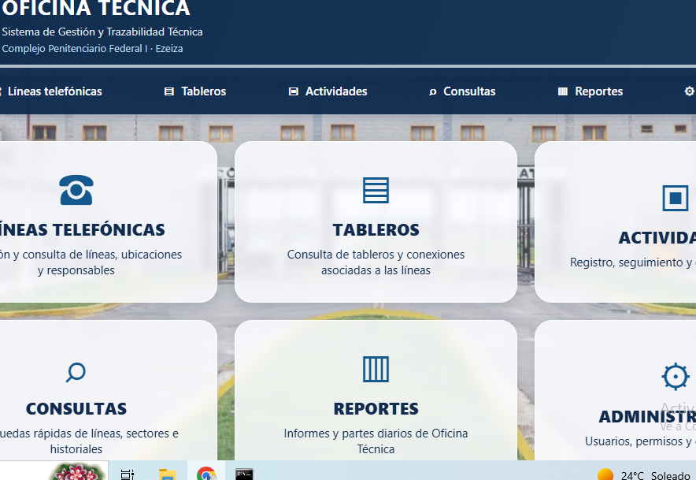

📝
Registro de tareas
Incorporación de tareas y novedades para mantener organizada la información.
Aplicación web orientada a organizar tareas, novedades y pendientes de una oficina técnica, facilitando el seguimiento de actividades y la continuidad de la información entre relevos.
● Proyecto en desarrolloEl proyecto surge de la necesidad de contar con una herramienta sencilla que permita registrar y consultar tareas pendientes, novedades y actividades de una oficina técnica.
La propuesta busca mejorar la organización de la información, facilitar el seguimiento de cada tarea y evitar que los asuntos pendientes pierdan continuidad cuando se produce un cambio de relevo.
Incorporación de tareas y novedades para mantener organizada la información.
Organización de actividades pendientes y consulta de su evolución.
Identificación de responsables y estados de las tareas para facilitar su seguimiento.
Consulta de información para facilitar la continuidad de las actividades y novedades.
Diseño de una interfaz visual con botones, iconos y elementos de navegación.
Posibilidad de adaptar la identificación del sistema a distintos entornos de trabajo.
A continuación se presentan capturas de pantalla de la aplicación en desarrollo.

Aquí se mostrará la vista general de la aplicación.Aquí se mostrará el formulario de carga de información.
Aquí se mostrará el listado de tareas y sus estados.
Las imágenes se incorporarán cuando estén disponibles las capturas definitivas de la aplicación.
El sistema se encuentra en etapa de desarrollo y mejora. Se trabaja sobre la organización de sus funciones, la presentación visual y la experiencia de uso.
El objetivo es construir una herramienta práctica, sencilla y adaptable a las necesidades de gestión de tareas de una oficina técnica.
En desarrolloEsta presentación tiene fines demostrativos. Las capturas públicas deben utilizar datos ficticios y no deben incluir información interna, personal ni operativa.